This is a step-by-step review of the process of creating a Google Cloud Function. |
|

What Technologies Are We Using?
- The Cloud Function (GCF) will be implemented in Google Cloud Platform (GCP)
- Your development environment will be the Google Cloud Shell, using the Code Editor
- The logic is written in JavaScript, packaged by Node.js
- Source code for the GCF will be deployed from a Cloud Source Repository
- You will also create a remote Git repository on GitHub.IU so that you can securely store and review your code even after your GCP credits have expired.
When creating a Cloud Function from scratch, you should perform each of the following steps in order.
- Create a remote Git repository on GitHub.IU
- Create a Cloud Source Repository in the Google Cloud Platform (GCP)
- Create a Google Cloud Function (GCF) in the Google Cloud Platform
- Create a project directory within Cloud Shell, then enter it
- Initialize a new Node package
- Create a local Git repository and connect it to your remotes
- Write your code
- Commit your code & update the Node package version
- Push your code to your remote repositories
- Deploy your code to the Cloud Function
- Test your Cloud Function
You will want to provide a repository in which you can store your code.
This backup allows for the following:
- You will have access to your code after your Google Cloud Platform (GCP) credits have expired.
- You can share this repository with the instructor to help troubleshoot errors.
- It's easy to feature this repository on your public GitHub profile, if you choose.
Visit GitHub.IU
In a browser on your computer, open a new tab and log into GitHub.IU.
Connect with your standard IU username and passphrase. You will not need to use two-factor authentication for this service.
Create a New Repository
Once logged in, create a new remote repository. There are a few ways to do this.
When you first log in, you can click the "New Repository" button. Other pages within GitHub have a similar button that just says "New." Both perform the same action. |
|

Alternatively, you can go to the "+" symbol in the top right of the browser window and choose the "New Repository" option. | 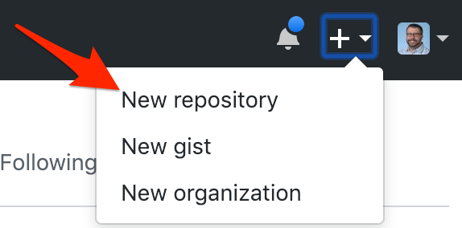 |
Name the Repository
Give your repository a logical name. You'll end up with many repositories, so organizing them now is a very good idea.
For this tutorial, we will use the name:
cit41200_gcf_bmi_calculator
Review the Created Repository
The next GitHub page takes you to your empty repository and walks you through the steps to add content to it. These steps will be described in the upcoming sections of this tutorial.
This repository will be where you deposit the source code for your Google Cloud Function (GCF.) Its contents should mirror those in your GitHub.IU repository, but you will lose access to the Cloud Source Repositories when your Google Cloud Platform (GCP) credits expire.
Create the Repository
In the GCP interface, choose the hamburger menu in the top left and scroll down to the Source Repositories under the Tools heading. | 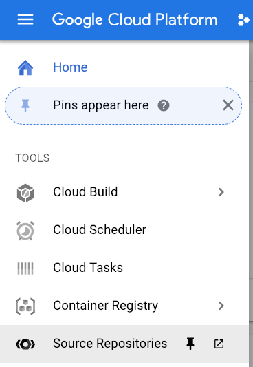 |
Once in the Cloud Source Repositories window, click the "Add repository" button.
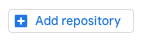
You will create a new repository.

Name Your Repository
Give your repository a name that makes sense to you and references the specific project. You will end up with a lot of repositories.
For this tutorial we will use the name:
cit41200_gcf_bmi_calculator
Select Your Repository Options
When you arrive at the overview page for your repository, choose the following options:
- "Push code from a local Git repository"
- Authentication: "Google Cloud SDK"
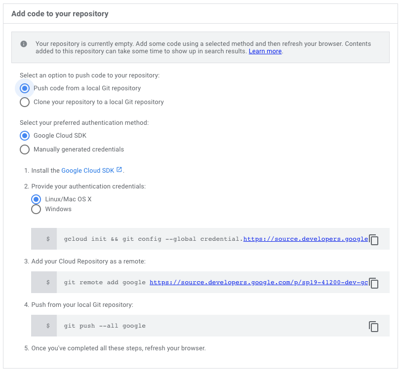
Now you will create and configure the Google Cloud Function (GCF) in the Google Cloud Platform (GCP).
Enter the Cloud Functions Dashboard
From the GCP project dashboard, click the hamburger menu at the top left and choose "Cloud Functions" from the Compute heading. | 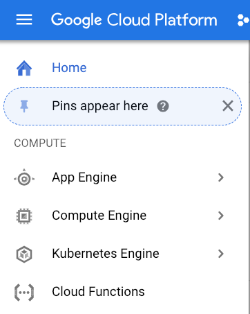 |
If the Google Cloud Functions API is not enabled, click "Enable API." This adds the Cloud Functions to the billing for this project.
Create and Configure a Function
Click the "Create function" button.
If you already have functions created, the button will be near the top of the GCF dashboard.
Add the settings to the function as shown. Detailed settings appear below.
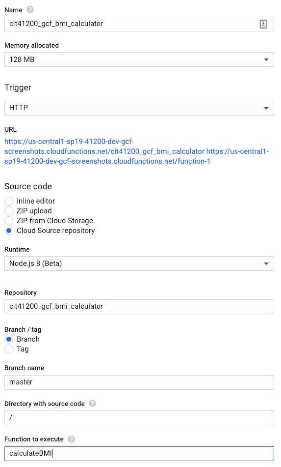
Name for the Function: cit41200_gcf_bmi_calculator
Trigger: HTTP
Source Code: Cloud Source Repository
Runtime: Node.js 8 (Beta)
Repository: cit41200_gcf_bmi_calculator
Branch / tag: Branch
Branch name: master
Directory with source code: /
Function to execute: calculateBMI
Click the "Create" button.
From the Google Cloud Platform console, click the button for Cloud Shell.
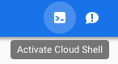
Inside the Cloud Shell, create a new directory for the source code for this project and then enter it:
mkdir gcf_bmi_calculator
cd gcf_bmi_calculatorYour application logic is written in JavaScript and is delivered as a Node.js package. You'll need to ensure you are using a compatible version of Node.js, install a compatible version if needed, and then create a new Node.js package.
Verify Node.js Version
GCF expects a Node.js runtime version of 6 or 8. We will use Node.js v 8.10 for this tutorial.
node -vIf the Node version is anything other than 8, use Node Version Manager (nvm) to install the correct version.
nvm install 8.10You should see a message that you are currently using Node.js 8.10.
Initialize a new Node Package
You will now use the Node Package Manager (npm) to create a new Node.js package.
npm initProceed through the dialog to input any values you understand. If the default value (the value that appears in parenthesis) is acceptable, you can simply press Enter.
At the end of this configuration, you will have created a package.json file that contains the manifest for your Node.js package.
Create Your Code File
The package.json file contains configuration information for your Node.js package. It does not, however contain any functional logic. By default, your logic should be stored in an index.js file.
To create this file, use the following Unix command:
touch index.jsWith your files created, you should create your local Git repository and then connect it to your two remote repositories (GitHub.IU and Google Cloud Source Repositories.)
git init
git add .
git commit -m "Initial Commit"Connect to Your Remote GitHub.IU Repository
You will add a remote nicknamed origin that will connect your local repository to your repository on GitHub.IU.
git remote add origin https://github.iu.edu/USERNAME/REPOSITORY_NAME.gitConnect to Your Remote Cloud Source Repositories Instance
You will add a remote nicknamed google that will connect your local repository to your repository on Cloud Source Repositories. You will also configure the repository to use your GCP credentials instead of a username and password.
gcloud init
git config --global credential.https://source.developers.google.com.helper gcloud.sh
git remote add google https://source.developers.google.com/p/PROJECT_ID/r/REPOSITORY_NAMEYou are now able to push code from your local repository to both of your remote repositories.
From the toolbar in the Cloud Shell window, you can open the browser-based Code Editor.
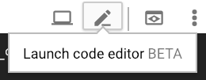
This will allow you to edit your code files in a simple but effective plain text editor.
From the Files menu on the left, navigate through your directory structure until you find your newly-created | 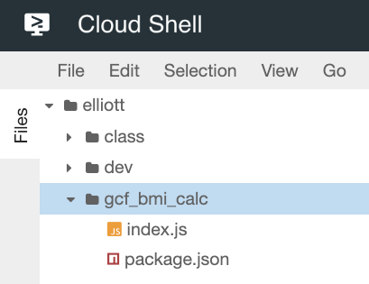 |
With your index.js file loaded in the editor, input the following code:
// Imperial calculation: 730 * weight / (height * height)
exports.calculateBMI = (req, res) => {
const userHeight = req.query.height;
const userWeight = req.query.weight;
const bmi = ((730 * userWeight) / (userHeight * userHeight));
const message = `Your BMI is ${bmi}.`;
res.status(200).send(message);
}Choose Save from the File menu.
Once you have made a sufficient number of changes to your code, you can make a Git commit and store your current code version.
Create a Git commit
git add .
git commit -m "YOUR MESSAGE HERE"Update the Node.JS package version
npm version minorNow you must push your code to your remote repositories. You must push to your Cloud Source Repository every time to see changes in your Cloud Function. You may push to your GitHub.IU as often as you'd like to keep your backup intact.
Push to Cloud Source Repositories
Your Cloud Source Repository is nicknamed google. You need to push the master branch of your local Git repository there.
git push -u google masterPush to GitHub.IU
Your Cloud Source Repository is nicknamed origin. You need to push the master branch of your local Git repository there.
git push -u origin masterNow that your current code is pushed to the remote repository on Cloud Source Repositories, you must instruct your Google Cloud Function to retrieve the latest version of that code. There are two ways to do this.
Edit/Save Your GCF
The easiest way to redeploy your source code is to do the following:
- In a browser, go to your Cloud Function details view
- Click the Edit button in the upper menu
- Scroll to the bottom of the page and click the Save button
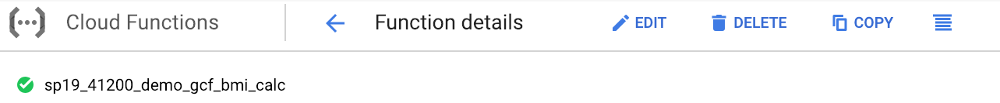
Although you did not make any edits to the GCF, the source code will be retrieved from Cloud Source Repositories.
Deploy Using the Google CLI
You can also instruct your GCF to retrieve the source code from the repository using the command line.
gcloud functions deploy CLOUD_FUNCTION_NAME --source=
https://source.developers.google.com
/projects/PROJECT_ID
/repos/REPOSITORY_NAMENo matter which method you choose, it will take up to two minutes for your GCF to deploy. Watch for the green checkmark on the GCF dashboard to tell you when the function is ready.
To test your Cloud Function, you will need to use the HTTP trigger (URL) that was created for you when you created your Function.
You can find your trigger under the Trigger tab of the Cloud Function detail screen.
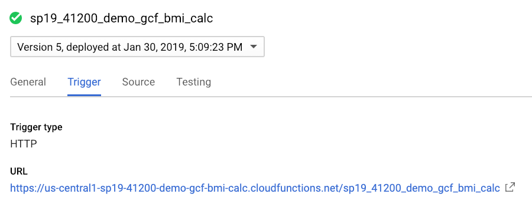
Given the code written in this tutorial, your querystring must have two key:value pairs. Here is a breakdown of the HTTP request's structure:
https://REGION-PROJECT_ID.cloudfunctions.net/FUNCTION_NAME?KEY1=VALUE1&KEY2=VALUE2
For example, the link to my demo GCF is:
https://us-central1-sp19-41200-demo-gcf-bmi-calc.cloudfunctions.net/sp19_41200_demo_gcf_bmi_calc?height=70&weight=190